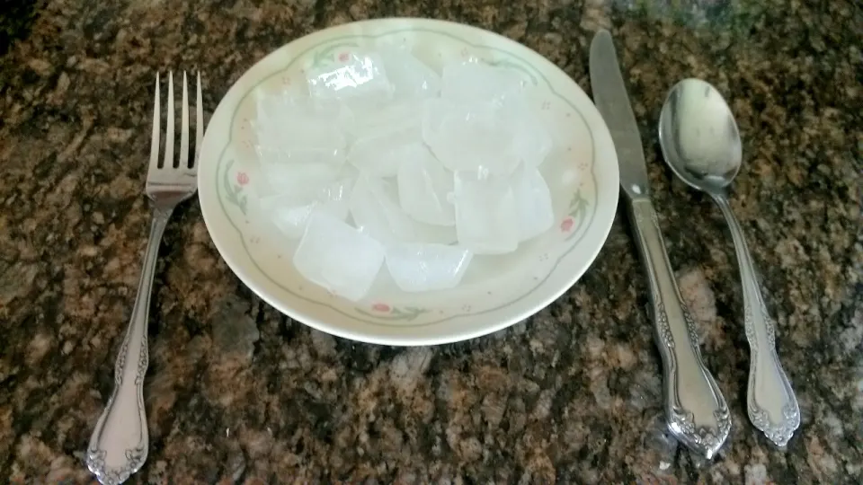

Ice Cubes

Description
I'm publishing this recipe because I'm sure that there are other
familes who have members, who don't know how or have forgotten
how to make ice when the ice tray is empty.
Ingredients
- 2 cups water (approximately)
- 2 tablespoons water (additional if needed)
Steps
- Empty the ice cubes that are left in the trays (if there
are any left) into the bin.
- Take the trays over to the sink and fill them with cold
water. (Hot water will freeze faster and more clear).
-
Place the water filled ice trays back in the freezer.
-
Replace the ice bin if you had to remove it.
-
Shut the door to the freezer.
-
Be sure to leave for around 4-6 hours at least to make
sure it is frozen.
-
If you want to experiment, you can freeze things like fruit
infused waters or juices.
Back